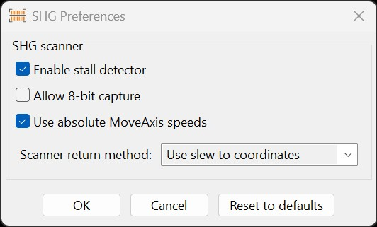

The SHG Scanner is an experimental tool for automating spectroheliograph scanning and SharpCap Pro capture. It is intended for
solar imaging workflows where the solar disk is scanned across the spectroheliograph slit while image capture is coordinated automatically.
The scanner uses an intelligent design that examines mount capabilities and chooses the best available scanning behavior for the connected mount.
Availability of the scanner is controlled by the Enable SHG scanning option in
Advanced Settings. Scanner-specific preferences are configured from the
SHG Preferences button inside the scanner dialog.
This feature is experimental. It supports RA scanning and, when the license and mount capabilities allow it, Dec scanning and multi-pass operation.
Opening the Tool
The SHG Scanner can be opened in either of these ways:
Open the Tools menu and select SHG Scan, or press Ctrl-G.
The SHG entry is controlled by the Enable SHG scanning option in Advanced Settings.
When that option is disabled, the DTT dialog button is hidden and the Tools menu entry is disabled. When enabled, the scanner is available only when
SharpCap Pro is ready with an open camera, no HelioMaker sequence or PHD2 calibration is active, the selected DTT target is the Sun, and the connected
mount supports a compatible scanning method. HelioMaker can use custom tracking rates when supported, or a directional MoveAxis fallback when the mount
offers it.
Prerequisites
SharpCap Pro must be installed, licensed, connected, and configured with the imaging camera.
The mount must be connected and able to perform the selected scan operation.
Dynamic Target Tracking should have correct observer location and current solar target information.
The spectroheliograph slit must be oriented so the solar image crosses it along the selected scan axis.
The planned sweep must cover the full solar disk, including any desired margin.
The focal length and binning settings used by HelioMaker should match the current optical setup.
SharpCap should be set to SER capture with an accepted mono or raw format. The scanner can offer to prepare these settings when needed.
Scan Settings
Scan axis: Selects RA or Dec. Dec scanning is shown only when it is available for the current license and mount capability set.
Scan direction: Selects the direction along the selected axis, including whether the mount should return near the starting position after capture.
Extra scan margin: Adds additional sweep distance beyond the computed solar disk coverage.
Oversampling factor: Controls how densely the scan samples the solar disk. With fixed legacy MoveAxis speeds, HelioMaker shows the resulting oversampling instead.
Pre/post capture: Adds capture time before and after the computed scan interval.
Custom FPS: Uses a specified frame rate for scanner calculations when enabled.
Scan speed: Displays the resulting scan speed, typically expressed relative to sidereal rate.
Return mode: Shows whether and how the mount will return after the scan when supported.
Solar diameter: Displays the computed apparent solar diameter in arcseconds and pixels.
Capture time: Displays the estimated capture duration for the scan.
Multi-Pass Scanning
When available, the Multi-Pass scanning section allows several scan passes to run from a single start command.
This is useful when several captures of the same solar line are needed. The repeat count controls how many passes will be attempted,
and the delay between scans leaves time for the mount and guiding setup to settle before the next pass begins. Multi-pass operation
requires a scan direction that includes a return move.
SHG Preferences
Click SHG Preferences in the scanner dialog to configure behavior that is not part of the per-scan setup.

Enable stall detector: Lets HelioMaker stop a scan or return motion if mount position feedback indicates that the mount is no longer moving as expected.
Allow 8-bit capture: Allows the scanner to accept 8-bit capture formats. When disabled, HelioMaker prefers 16-bit output and falls back to 8-bit only when the camera does not support 16-bit.
Use absolute MoveAxis speeds: Controls how MoveAxis fallback commands are interpreted. Toggle this if forward and return travel distances differ, or if the scan length does not match the expected solar diameter.
Scanner return method: Selects how the mount returns after a scan, such as slew-to-coordinates, directional slew, or custom tracking rate when supported.
Reset to defaults: Restores the SHG preferences to their default values.
Progress
The progress panel shows scanner state, elapsed time, remaining time, frame count, exposure, nominal FPS, and a progress bar. These values help confirm
that the capture and mount scan are proceeding as expected.
Starting a Scan
Configure the solar image and SHG slit orientation so the disk crosses the slit along the selected scan axis.
Confirm that the disk will be fully covered by the planned sweep.
Check focal length, binning, exposure, and FPS assumptions.
Review the computed scan speed, solar diameter, and capture time.
Review any orange warning panel shown by HelioMaker, especially undersampling or mount-speed warnings.
Click Start Scan and Capture.
Monitor the mount and SharpCap Pro capture until the scan completes.
Relationship to Standard Sequences
The SHG Scanner is separate from the normal HelioMaker sequence workflow. A standard sequence captures repeated video or image bursts using the main
sequence controls. The SHG Scanner performs a specialized scan-and-capture operation for spectroheliograph work.